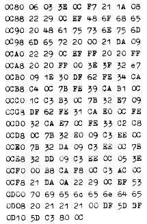

Nascom Journal |
4/80 |
| NAS-SYS 1 |
0 C 80 - 0 D 13 |
eine Zahl zw. 0-9. Diese "gewürfelte" Zahl kann nun mit Hilfe der Tasten 1-3 in die entsprechenden Stellen einer dreistelligen Zahl kopiert werden. Dieser Vorgang wird solange durchgeführt, bis alle Stellen der Anzeige ausgefüllt sind. Danach wird das Spiel-Ende angezeigt und nach einer kurzen Wartezeit erneut gestartet.
Übrigens sind zu diesem Spiel noch viele weitere Variationen erdenklich. Zu diesem Zweck muß man nur die Zielsetzung des Spiels ändern: niedrige Zahl, die Quersumme der Zahl muß durch 3 teilbar sein, oder man macht es sich zur Aufgabe, an eine vorher festgelegte Zahl so nahe wie möglich heranzukommen.
|

Start:E 0C80 |
|
|
,,,,,,,
Das hier gezeigte Programm ist eine überarbeitete Version eines interruptgesteuerten Schedulers, der von J.R. Keneally in der Zeitschrift „Computing Today“ veröffentlicht wurde. Der Sinn des Programms ist folgender:
Nehmen wir an, ein Rechner hat die Aufgabe, verschiedene Prozesse zu überwachen (z.B.in einer Alarmanlage Kontakte abfragen, Ein -Ausgabe in einem Multi-User System oder Heizungssteuerung). Die eine Lösung wäre, daß der Rechner zyklisch die einzelnen Stationen abfragt, ob es etwas zu tun gibt; das wäre ein "Polling". Die andere heißt Interrupt-Steuerung. Jede Station, die bedient werden will, löst einen bestimmten Interrupt aus, der einen Sprung zu der jeweiligen Bedienroutine ergibt. Ein Mittelding ist der Scheduler. Dieser hier ist speziell für den Nascom 1 geschrieben und nützt die Interrupt-fähigkeiten des PIO-Bausteins aus.
Die Bedienroutinen für die einzelnen Aktionen (Tasks in der Fachsprache genannt) liegen irgendwo im Speicher. Weiterhin werden in genauen Zeitabständen durch ein externes Signal Interrupts ausgelöst. Diese Interrupts rufen den Scheduler auf, der nun anhand einer „Task-Control-Liste“ entscheidet, welches Programm als nächstes abläuft. Entscheidend sind dabei die Daten in der TCL welche hier so liegen:
| erstes Byte: | Anzahl der Zeittakte, die zwischen jedem Task-Aufruf übersprungen werden. |
| zweites Byte: | Anzahl der Zeittakte, bevor die Task zum ersten Mal aufgerufen wird. |
| drittes Byte: |
Status der Task 00 nicht aufrufen 04 Task gültig 05 letzte gültige Task |
|
viertes/fünftes Byte: Einsprungadresse der Task. |
|
Jede Task, die nun aufgerufen wird, führt ihre Aktionen aus. Kehrt sie dann zum Scheduler zurück, entscheidet dieser anhand der TCL, welche Task die nächstniedrigere Priorität hat, worauf diese dann weiterlaufen darf, falls sie durch eine höher priorisierte Task unterbrochen wurde. Ist keine Task mehr aktiv, wird gewartet bis zum nächsten Zeittakt.
| Seite 6 von 20 |
|---|